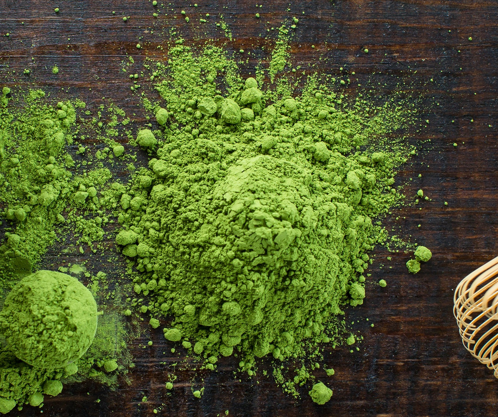
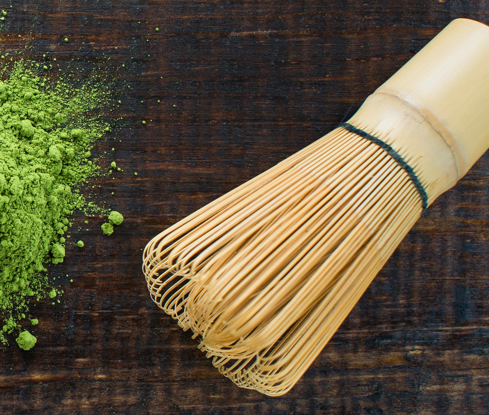
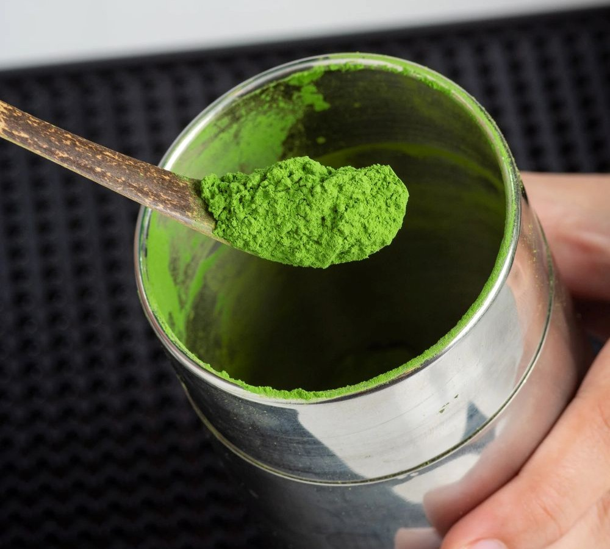
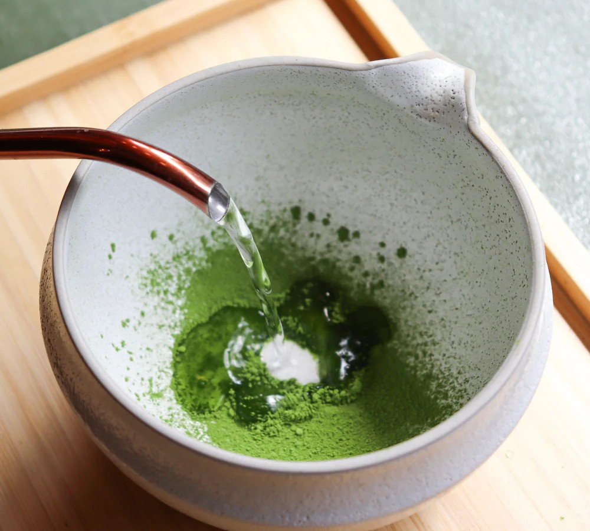
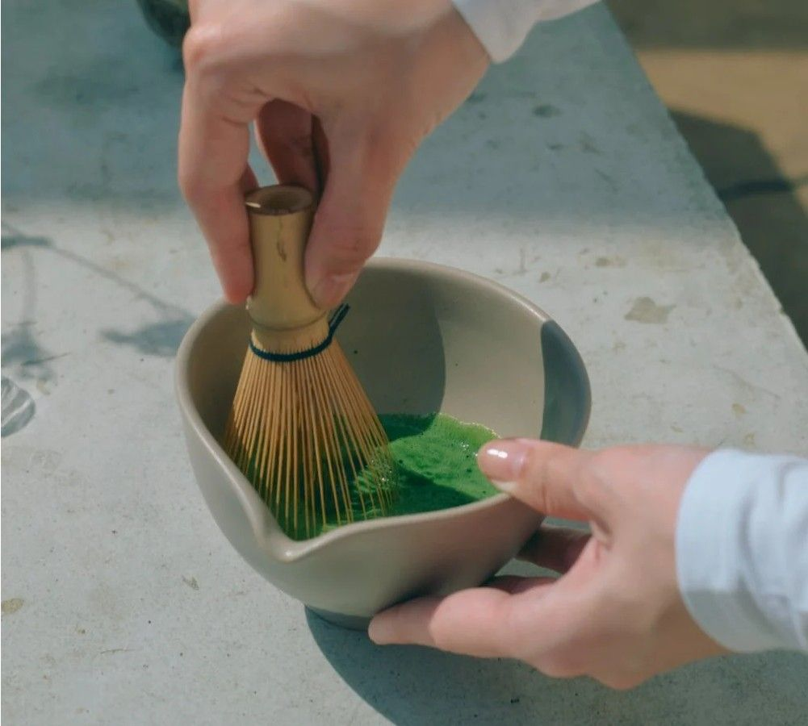

Matcha is a finely ground powder of green tea specially processed from shade-grown tea leaves. Shade growing gives matcha its characteristic bright green color and strong umami flavor. Matcha originated through cultural exchanges between China and Japan in the premodern period, developing from earlier powdered tea practices in China that were transmitted to Japan by Zen Buddhist monks. During the Song dynasty, tea leaves were ground into a fine powder and whisked with hot water. This method was introduced to Japan by the monk Eisai around 1191, where it continued to develop even as such practices declined in China. During the Muromachi period in the sixteenth century, Japanese tea farmers developed shading techniques to produce tencha, the tea leaves used for grinding into matcha. This innovation contributed to the development of modern matcha, characterized by its vivid green color and rich umami flavor, the latter derived from theanine, distinguishing it from earlier forms of powdered tea. Matcha is also used to flavor and dye foods such as mochi and soba noodles, green tea ice cream, matcha lattes, and a variety of Japanese wagashi confectionery.
Matcha has many health benefits, including the following:
Strict definitions of matcha are given by the International Organization for Standardization, ISO 20715:2023 "Tea - Classification of tea types," and the Japanese food labeling standard defined by Japan Tea Central Public Interest Incorporated Association. Both definition require the following:
The Japanese food labeling standard requires the tea leaves to be shaded for 2-3 weeks before harvesting using covering materials such as yoshizu, komo, or cheesecloth. Tea leaves after processing the first three steps are called tencha in this standard. ISO 20715:2023 allows matcha to be made from tender leaves, buds, or shoots, but Japanese food labeling standard allows it to be made only from leaves. Inexpensive green tea made by crushing non-shade grown tea leaves is sometimes sold under the name of "matcha" although it does not satisfy the above definitions. The cheaper alternative is used to flavor and dye foods.

Powdered tea originated in China during the Tang dynasty where tea leaves were pounded and then milled into fine powder before being shaped into "cakes". The Classic of Tea, written by Chinese tea master Lu Yu roughly between 760 to 762 CE, had documented the practise of steeping powdered tea in hot water. This involved first roasting compressed tea over a fire and then grinding it in a wooden grinder called a niǎn, boiling water in a pot, adding salt once it comes to a boil, then adding the tea powder to the boiling water and boiling it until it began to foam. It wasn't until the Song dynasty when whisks, bowls, and other tools first appeared in China that was used to froth up a drink called "mo cha", which translates to "powdered tea", and was made from steamed and dried tea leaves. The beverage was prepared by whipping the tea powder with hot water in a bowl. It was also during this era when Zen Buddhist monks from Japan began to visit China to attain books and sutras from Chiense scholars, and Japanese Buddhist monks will often encounter mo cha and its style of preparation in the Chinese temples. Although the term "matcha" was not yet used, the practice of preparing powdered tea with a tea whisk is believed to have originated in China no later than the 11th century. According to Cai Xiang's Record of Tea, when sifting the ground tea, the finer the sieve, the more the tea would float; the coarser the sieve, the more it would sink. This suggests that the powder particles were larger than those of modern matcha.
The complex manufacturing process of lump tea during the Song dynasty required significant labor and expense, and even the slightest error could result in failure. As a result, it was costly and inaccessible to the common people. During the Tang dynasty, "bitter when sipped and sweet when swallowed" was regarded as the ideal taste of tea. However, in the Song dynasty, this ideal was deliberately replaced with four desirable qualities: "aroma, sweetness, richness, and smoothness." This shift represented an attempt to eliminate the natural bitterness of tea. As a result, lump tea became an expensive and complicated product, and some scholars suggest this contributed to its rapid decline after the Ming dynasty. In the Ming dynasty, the founding emperor Zhu Yuanzhang issued a ban on the production of compressed tea in 1391. This decree led to the abandonment of compressed tea in China. Instead, a new method—similar to modern tea preparation—in which loose tea is steeped in hot water and extracted, became the mainstream practice. With the prohibition of compressed tea, the powdered tea associated with it also fell into disuse in China. In Japan, however, a tradition of powdered tea preparation was preserved. Through innovations such as shade cultivation of tea leaves and stone-milling, Japan eventually developed what is now known as matcha, which over time was deeply shaped by Japanese aesthetics and cultural principles.

The earliest documented reference to tea in Japan appears in the 9th century concerning the Buddhist monk, who is believed to have brought tea back from China. He is reported to have personally prepared and served sencha to Emperor Saga during an imperial excusion to Karasaki in 815. This sencha is believed to have been Chinese compressed tea, rather than the modern form of sencha in which tea leaves are steeped in hot water for infusion. In 816, by imperial order, tea plantations were established in the Kinki region. However, public interest in tea soon declined. Powdered tea first arrived in Japan around the 12th century. It can be traced back to Tang dynasty China, where Chinese Zen monks were the first to grind bricks of tea into fine powder with a pestle and mortar. Japanese monk Myoan Eisai travelled to China around the late 1180s, and encountered a drink at the temples there that the Chinese called as "mo cha", which involved pouring hot water over powdered tea and whisking it with a bamboo whisk. Eisai was credited to have brought back this Song dynasty style of tea preparation to Japan. In China, this practise of mo cha however faded over the next centuries during the Ming dynasty, but it continued in Japan, and become a key part of Japanese Zen Buddhist culture. In Japan, matcha became an important item at Zen monasteries and was highly valued by the upper classes from the 14th to the 16th centuries. Until the 13th century, matcha was made by grinding tea leaves with a grinder called a yagen, but the particles were rough and coarse in texture. In the 14th century, however, a stone mill specialized for tea appeared, producing finer powder and improving the quality of matcha.



| Matcha | Matcha Hōjicha | Funmatsucha | Konacha | Instant Tea | |
|---|---|---|---|---|---|
| Features | Tea grown in the shade, steamed, and dried. | Hōjicha (charcoal roasted green tea) powdered into matcha. | A powdered green tea that does not use tencha. | Leftover dust, leaves, and bits from the green tea production process and sieved during the finishing process. | Water-soluble component extracted from green tea. |
| Ground to a fine powder. | Less expensive than other green teas. | Concentrated, dried, and made into powder. | |||
| How to drink | Drink by mixing with hot water. | Drink using a teapot or a tea strainer. | Drink tea dissolved in hot water. | Source | https://en.wikipedia.org/wiki/Matcha |
In Japan, matcha became an important item at Zen monasteries and was highly valued by the upper classes from the 14th to the 16th centuries. In the 14th century, a stone mill specialized for tea appeared, producing finer powder and improving the quality of matcha. During the Muromachi period, tea spread among the general public. Among the elite, it became fashionable to drink tea using expensive Chinese ceramics known as karamono. In the 16th century, however, tea masters emphasized simplicity, giving rise to the Japanese tea ceremony. This practice prioritized introspection over ostentation and came to favor simple utensils. The wabi-sabi aesthetic, which finds beauty in modesty, simplicity, and imperfection, became closely associated with the tea ceremony. It was long believed that the practice of growing tea plants under shade by covering them with straw or reeds began in Japan in the late 16th century. This technique, originally intended to protect tea sprouts from frost damage, led to the development of a unique Japanese matcha that was bright green and had a distinctive aroma and flavor. By limiting exposure to sunlight, photosynthesis in the leaves is inhibited, preventing the conversion of theanine, which is a component responsible for umami—into tannins, which cause bitterness and astringency.